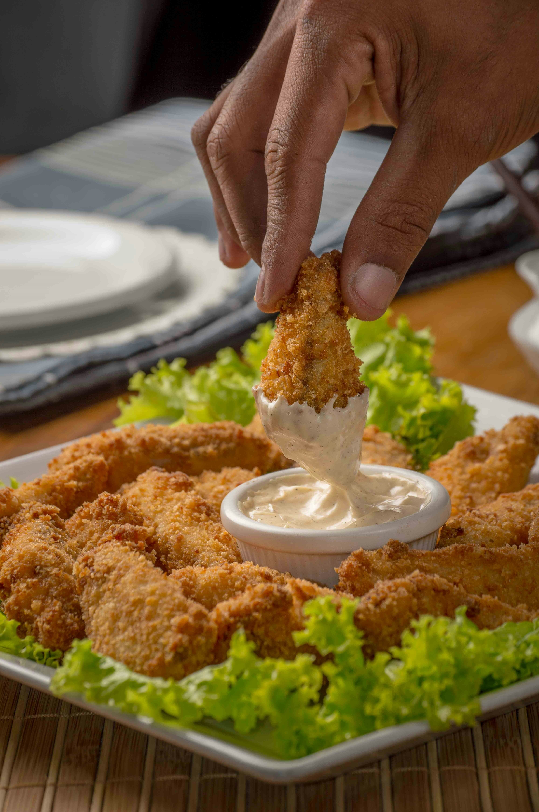

Crispy Fried Chicken

Description
The ultimate comfort food featuring tender, juicy chicken pieces coated in
a perfectly seasoned, ultra-crispy golden batter.
This recipe uses a double-dredging technique to achieve maximum crunch and
flavor in every single bite.
Ingredients
- 4 chicken thighs or drumsticks
- 2 cups of buttermilk
- 2 cups of all-purpose flour
- 1 tablespoon of paprika
- 1 tablespoon of garlic powder
- 1 teaspoon of cayenne pepper (for a kick)
- Vegetable oil (for deep frying)
Steps
-
Place your chicken pieces in a bowl and submerge them completely in
buttermilk. Let it marinate for at least 30 minutes.
-
In a large clean bowl, mix your flour, paprika, garlic powder, salt,
pepper, and cayenne pepper together.
-
Remove each piece of chicken from the buttermilk, shake off the excess,
and coat it thoroughly in the seasoned flour.
- Heat vegetable oil in a deep pot to 175°C (350°F).
-
Carefully drop the chicken pieces into the hot oil and fry for 12-15
minutes, turning occasionally, until the skin turns deep golden brown
and crispy.
Back to Homepage